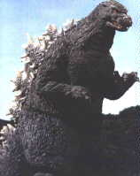

Gojira

Table of Contents
|
Series Information
|
Gameboy Games
MSX Games
|
Nintendo Games
|
SNES Games
Known in the US as Godzilla. No other information available at this time.
Other Resources
Gorzilla's Kaiju Datapedia
Anime Video Game Resource Center © 1998 by
Luis A. Cruz